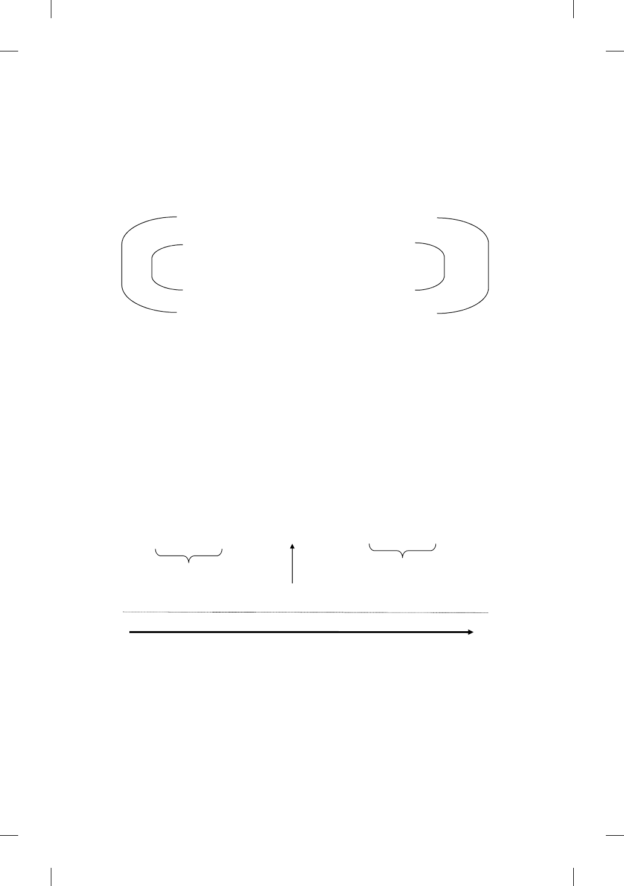

e Gospel in Galilee
2:1—3:632
religious leaders (i.e., the coming of the new demands and the abandoning
of the old).
Diagram 1
Chiastic Structure of Mark 2:1 – 3:6
2:1-12 Healing of the Paralytic (Death/Resurrection)
2:13-17 Call of Levi and the Feast (Eating/Fasting)
2:18-22 Question on Fasting
2:23-28 Plucking Grain on Sabbath (Eating/Fasting)
3:1-6 Healing of Man with
Shriveled Hand
(Death/Resurrection)
e correspondence between the rst and the h, the second and the
fourth, appears to be forced, as the main points of the stories lie elsewhere.
A linear structure is more cogent. e rst will then be linked with the sec-
ond by the theme of sin and forgiveness, the third stands alone as the center
and explanatory piece.
21
e fourth and the h correspond through the
Sabbath theme (see Diagram 2).
Diagram 2
Linear Structure of Mark 2:1 – 3:6
Healing of
Paralytic
»
Call of Levi
and Feast
»
Question
on Fasting
»
Plucking Grain
on Sabbath
»
Healing of
Shriveled Hand
(Sin/Sinners) (Sabbath)
Arrival of the New
Intensification of Opposition to Jesus
Unspoken question (2:6) query put to disciples (2:16) query put to Jesus (2:18)
accusatory question put to Jesus (2:24) no question, but plot to indict and kill (3:2, 6)
21. Kiilunen 1985: 68–80; but cf. also Dewey 1980: 109–10, where the point is
intimated.